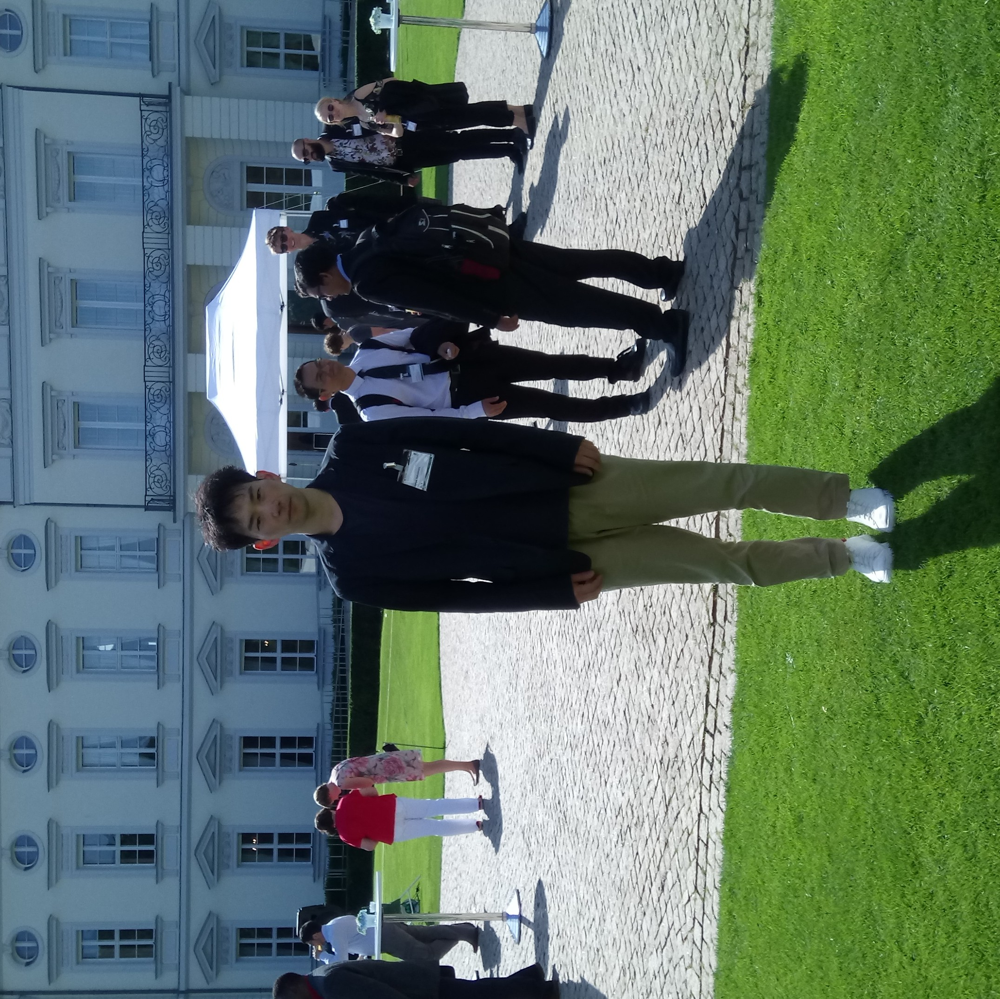

Junya Nakamura's PAGE

Welcome to my home page!
I am a researcher in theoretical particle physics. My recent interests centre on the question of how to make maximum use of the polarisation information of massive particles in order to find a (small) signal of physics beyond the standard model of elementary particle physics at high energy particle colliders, notably the LHC.
My publications can be found through my profile page of inSPIRE.
My talk slides since I have moved into Germany are uploaded here.
Contact details:
Institut für Theoretische Physik
Universität Tübingen
Auf der Morgenstelle 14
72076 Tübingen
Germany
Office : Gebäude D, Ebene 7, P28.
Email : junya.nakamura-at-itp.uni-tuebingen.de (change -at- to @)